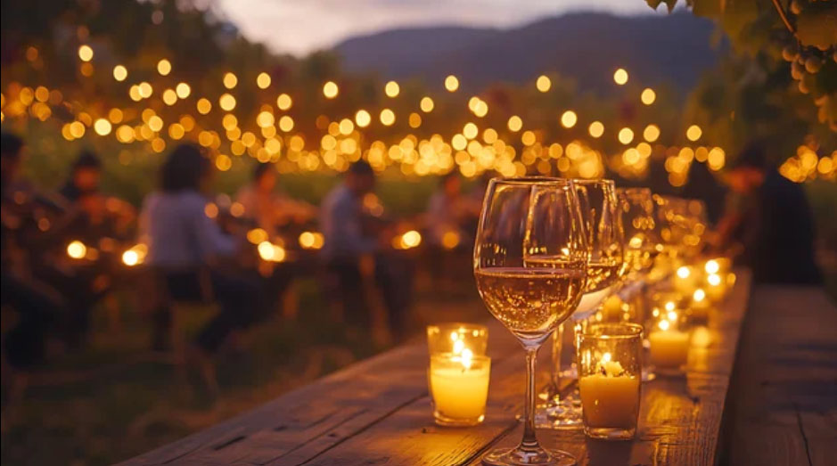
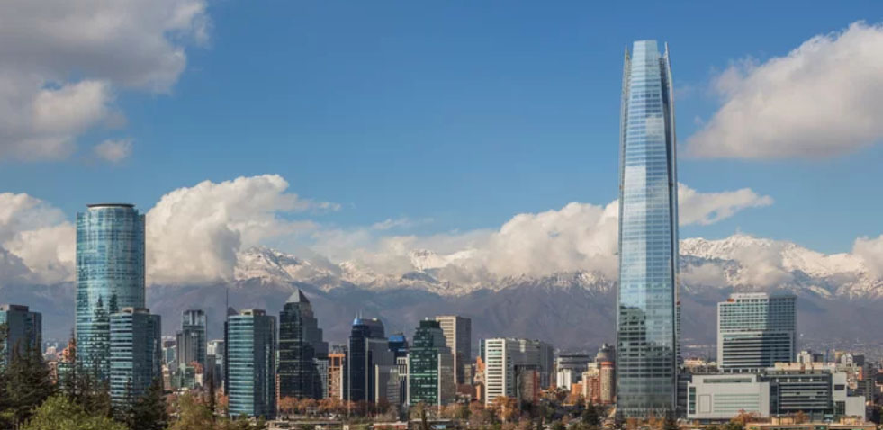
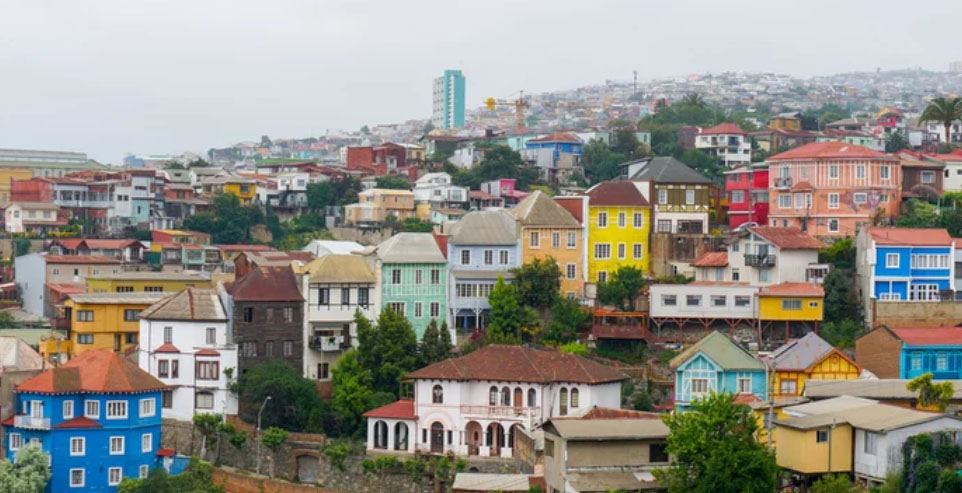
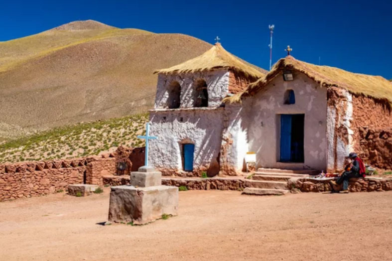

Discovery of the South
Experience the Rhythm of Chile
From the driest deserts on earth to the mystical glaciers of the south, uncover a land of vibrant contrasts and timeless beauty.
Journey across Chile's greatest treasures.
Iconic Landmarks
Journey through time and nature across the most recognizable monuments of the Chilean landscape.

Easter Island
The enigmatic Moai statues stand guard over a volcanic paradise steeped in Rapa Nui legend.

Torres del Paine
Soaring granite spires and turquoise lagoons define the pinnacle of South American wilderness.

Atacama Desert
Walk through the Valley of the Moon in the driest place on Earth, where the terrain mimics another planet.
Urban Pulse
Cities of Distinction
From the sophisticated sprawl of Santiago to the bohemian charm of Valparaíso, Chile's cities are the heartbeat of its culture.

Santiago
The vibrant metropolis nestled in the shadow of the mighty Andes, blending history with cutting-edge design.

Valparaíso
A UNESCO World Heritage site of colorful hills, historic funiculars, and bohemian soul.

Pucón
Adventure capital by the smoking volcano and pristine crystal lakes.

San Pedro de Atacama
The gateway to the stars, where desert heritage meets the universe's most silent secrets.
The Flavors of Chile
A culinary journey through the earth, sea, and tradition. Savor fresh Pacific seafood, local produce, and timeless recipes full of authentic Chilean flavor.

Empanada Chilena
Traditional pastry filled with seasoned beef, onions, olives, and egg.

Pastel de Choclo
A comforting corn-based casserole with a savory meat filling hidden beneath.

Ceviche Chileno
Fresh-caught seafood cured in lime, cilantro, and local chilies.

Completo Italiano
The quintessential Chilean hot dog with avocado, tomato, and mayo.
チリ共和国の歴史
Republic of Chile
The history of Chile is characterized by fierce indigenous resistance, Spanish conquest and independence, and a brutal military dictatorship in the late 20th century, leading to its current status as one of South America's most politically stable and economically developed nations.
古代・先植民地期
多様な先住民族文化 （紀元前1万年以上～）
北部では世界最古のミイラ文化を持つチンチョロ文化、南部では不屈の闘志を持つマプチェ族などが独自の社会を築く。15世紀末にはインカ帝国が北部に進出。
植民地時代（近世）
マゼランの到達と征服 （1520年～）
フェルディナンド・マゼランが南端のマゼラン海峡を通過。1541年にペドロ・デ・バルディビアがサンティアゴ市を建設
マプチェ族との長期戦争（アラウコ戦争） （1536年 〜 1880年代初頭）（約350年間）
チリ南部のマプチェ族が激しく抵抗し、植民地時代を通じてスペイン軍との間で300年に及ぶ紛争が続く。チリはペルー副王領のもとで、長年「貧しい辺境の植民地」とされる。
近代（独立と国家形成）
独立宣言とオヒギンス （1818年）
ナポレオンのスペイン侵攻を機に自治運動が開始。サン・マルティンらのご加護を得たベルナルド・オヒギンスが独立戦争を指揮し、1818年に独立を宣言。
太平洋戦争 （1879年～1883年）
アタカマ砂漠の硝石鉱山を巡り、ペルー・ボリビアの同盟軍と衝突。チリが圧勝し、領土を北部に大きく拡大（ボリビアは海への出口を失う）。
近現代（民主化の実験と軍事独裁）
世界初の社会主義政権 （1970年）
サルバドール・アジェンデが大統領に就任。自由選挙によって選ばれた世界初のマルクス主義政権として、鉱山の国有化などを進める。
チリ・クーデターとピノチェト独裁 （1973年～1990年）
経済混乱の中、米国の支援を受けたアウグスト・ピノチェト将軍率いる軍部がクーデターを断行（アジェンデは自殺）。以後、厳しい軍事独裁体制が敷かれ、数千人の左派支持者が虐殺・行方不明となる一方、「シカゴ・ボーイズ」による新自由主義改革で経済は急成長。
1980年 新憲法草案に対する国民投票の実施
1981年 新憲法発効
1988年 ピノチェット大統領信任投票
1989年 大統領選挙、国会議員選挙
現代
民政移管と安定
1990年に民主化へ復帰。南米で最も経済が安定し、OECD（経済協力開発機構）にいち早く加盟。
新憲法への模索
2019年の大規模な格差是正デモを契機に、ピノチェト独裁政権時代に作られた現行憲法の改正を巡る国民的議論が続けられており、より平等の確保された社会への転換を模索している。
アラウコ戦争（Arauco War）
歴史的背景と概要1536年に始まったスペイン人によるチリ征服作戦に対し、マプチェ族は激しく抵抗しました。この衝突は19世紀にチリが独立し、最終的にマプチェ族の領土を併合（「アラウカニア制圧作戦」）するまで形を変えながら続きました。
- 主な対立構造: スペイン帝国（後にチリ共和国） vs マプチェ族（アラウコ族）
- 主な戦場: ビオビオ川周辺のアラウカニア地域
- 期間: 1536年 〜 1880年代初頭（約350年間）
- クスタントの死: チリの征服者ペドロ・デ・バルディビアは、1553年のトゥカペルの戦いでマプチェ族の若き英雄ラウタロに敗れ、捕らえられて処刑されました。
- マプチェ族の「大反乱」: 1598年のキュララバの戦いでスペイン総督が戦死。これを機にビオビオ川以南のスペイン人入植地がことごとく破壊され、スペイン軍は撤退を余儀なくされました。
- 交易や外交のための定期的な和平会議（パーラメント）が開催されました。
- 散発的な衝突はあったものの、比較的安定した交易関係が築かれた時期です。
- 優れた適応力: スペイン軍から馬や鉄製武器、銃の扱いを奪い、すぐに自軍の戦術（騎兵隊など）に取り入れました。
- ゲリラ戦術: 鬱蒼とした森林や沼地などの地形を熟知し、ヒット・アンド・ラン（一撃離脱）戦術でスペイン軍を翻弄しました。
- 分権的な社会構造: マプチェ族には「中央政府」や「絶対的な王」が存在しませんでした。そのため、スペイン軍が一人の首長を倒しても、民族全体を降伏させることが不可能でした。
- テムコ（Temuco）: アラウカニア州の州都。マプチェ族の文化や歴史を伝える「アラウカニア地方博物館」があります。
- ビオビオ川（Río Biobío）: かつてスペイン帝国とマプチェ王国の国境線だった大河。
- コンセプシオン（Concepción）: スペイン軍がマプチェ族に対抗するための軍事拠点として築いた歴史ある都市です。
1. 戦争の3つの主要な時期
アラウコ戦争は、時代によってその性質が大きく変化しました。
激化する武力衝突（16世紀中頃〜17世紀初頭）
初期は、チリの征服を進めるスペイン軍と、それを阻止しようとするマプチェ族の凄惨な戦いが続きました。
パーラメント（和平交渉）の時代（17世紀中頃〜18世紀末）
1641年の「キリンの和平条約」以降、双方はビオビオ川を公式な国境として認め合いました。
「アラウカニア制圧作戦」（19世紀後半）
チリがスペインから独立した後、1860年代から1880年代にかけてチリ政府軍がアラウカニア地域への軍事侵攻を本格化させました。これによりマプチェ族の独立は終焉を迎え、彼らの領土はチリ国家へと完全併合されました。
2. マプチェ族が300年も戦えた理由
強大なスペイン帝国や近代軍を相手に、なぜマプチェ族は独立を維持できたのでしょうか。
3. ゆかりの地を訪ねる（観光・歴史探訪）
現在、アラウコ戦争の歴史やマプチェ族の文化は、チリ南部のアラウカニア州（IX州）を中心に触れることができます。
「シカゴ・ボーイズ（Chicago Boys）」とは、アメリカの シカゴ大学 で経済学を学んだチリ人経済学者のグループです。
彼らは1970年代から1980年代にかけて、アウグスト・ピノチェト政権の経済政策を主導しました。主な改革は次のようなものです。
- 国営企業の民営化
- 関税の引き下げと自由貿易の推進
- 規制緩和
- 年金制度の民営化
- 市場競争を重視する新自由主義政策
これらの改革により、チリ経済は長期的に大きく成長し、「南米の優等生」と呼ばれるほどの経済発展を遂げました。一方で、所得格差の拡大や社会保障の負担増などの課題も残りました。
1. 独裁者と経済学者の役割分担
権力と弾圧（ピノチェト将軍）
政治権力を独占し、軍事力を使って反対派や労働組合を激しく弾圧しました。民主主義を停止したため、国民の反発を力で抑え込むことができました。
政策の実行（シカゴ・ボーイズ）
ピノチェトが作った「反論を許さない独裁環境」を利用して、通常の一国では不可能なほど過激で急速な新自由主義改革（市場の自由化、国営企業の民営化、規制緩和）を実験的に推し進めました。
2. なぜ独裁政権と結びついたのか？
彼らが目指した自由市場経済（小さな政府）の導入は、国民に一時的な失業や貧困、格差の拡大などの強い痛みを伴うものでした。民主主義国家では選挙があるため国民の反対で頓挫しやすいですが、独裁政権下であれば国民の声を無視して強制的に実行できたため、この奇妙な協力関係が成立しました。
この「独裁政権」と「シカゴ・ボーイズ」の結びつきは、歴史的・経済的に「功罪（メリットとデメリット）の双方が非常に大きい」として、今なお世界中で激しい議論が続いている複雑な事象です。
クーデター直後のチリで行われた伝説の「無人試合（対ソ連戦）」
1973年11月21日、チリの首都サンティアゴのエスタディオ・ナシオナル（国立競技場）で行われた「チリ対ソ連」のワールドカップ予選プレーオフ第2戦は、サッカーの歴史で最も不気味で政治的な「無人試合（ゴースト・ゲーム）」として語り継がれています。
対戦相手であるソ連の選手はピッチに一人もおらず、チリの選手たちだけがボールを蹴ってゴールを決めるという異様な光景でした。この事件の背景には、次のような生々しい国際政治のドラマがありました。
1. 血塗られたスタジアム
1973年9月11日、ピノチェト将軍によるクーデターでアジェンデ社会主義政権が崩壊しました。軍事政権は、捕らえた数万人規模の反体制派（左派市民、労働者、知識人）を一時的に収容する場所として、なんと試合会場である国立競技場（スタジアム）を強制収容所に変えてしまったのです。そこでは日常的に激しい拷問が行われ、多くの人々が虐殺されていました。
2. ソ連のボイコットとFIFAの「政治的判断」
もともと、9月26日にモスクワで行われた第1戦は0対0の引き分けでした。しかし、クーデターによって社会主義の仲間であるアジェンデ政権が倒されたことに怒ったソ連は、第2戦のボイコットを示唆します。
ソ連は「反体制派の血で汚れたスタジアムで試合はできない」「中立国での開催にすべきだ」と強く主張しました。これに対し、国際サッカー連盟（FIFA）は現地に視察団を派遣しますが、軍事政権による隠蔽工作もあり、「スタジアムでの試合開催に問題はない」とチリでの開催を強行する裁定を下しました。結果、ソ連は正式に棄権（ボイコット）を発表しました。
3. 無人のピッチで行われた「劇」
ソ連の不戦敗（棄権）は確定していましたが、チリの軍事政権は「チリの正当性」と「新政権の健在ぶり」を世界にアピールするため、あえて試合をスケジュール通りに開催させました。当日は数万人の観客がスタンドを埋める中、主審のホイッスルで試合が開始されました。
- ピッチにはチリ代表の11人だけが整列。
- キックオフからチリの選手たちが誰もいない相手陣内へパスを繋ぎながら進む。
- 最後はキャプテンのフランシスコ・バルデス選手が無人のゴールにシュートを突き刺す。
この形だけの「ゴール」が決まった瞬間、試合はチリの不戦勝（規定により2-0）で終了しました。
4. 1974年の西ドイツワールドカップへの出場権獲得
このあまりに不条理な「劇」によって、チリは翌1974年の西ドイツワールドカップへの出場権を獲得しました。しかし、この無人試合の映像は「独裁政権による不気味なプロパガンダ（政治宣伝）」として、今なおスポーツが政治に最も残酷に利用された最悪の例として世界中に記憶されています。
チリが1990年に民主化へ復帰した理由は、一言でいうと、国民投票で軍事政権の継続が否決されたためです。
流れは次のようになります。
1973年 アウグスト・ピノチェトがクーデターで政権を掌握し、軍事独裁を開始。
1980年 新憲法を制定。この憲法では、1988年に国民投票を実施し、ピノチェトがさらに8年間大統領を続けるかどうかを国民が決めることが定められました。
1988年 国民投票 「ピノチェト続投」に対して約56%が「反対（No）」を投じ、続投が否決されました。
1989年 民主的な大統領選挙が実施されます。
1990年 パトリシオ・エイルウィンが大統領に就任し、民政へ移行（民主化）しました。
なぜ国民投票で負けたのか
主な理由は、
- 長年の独裁政治への反発
- 人権侵害への批判
- 国際社会からの民主化要求
- 経済成長があっても格差や不満が残っていたこと
これらが重なり、多くの国民が民主化を望みました。